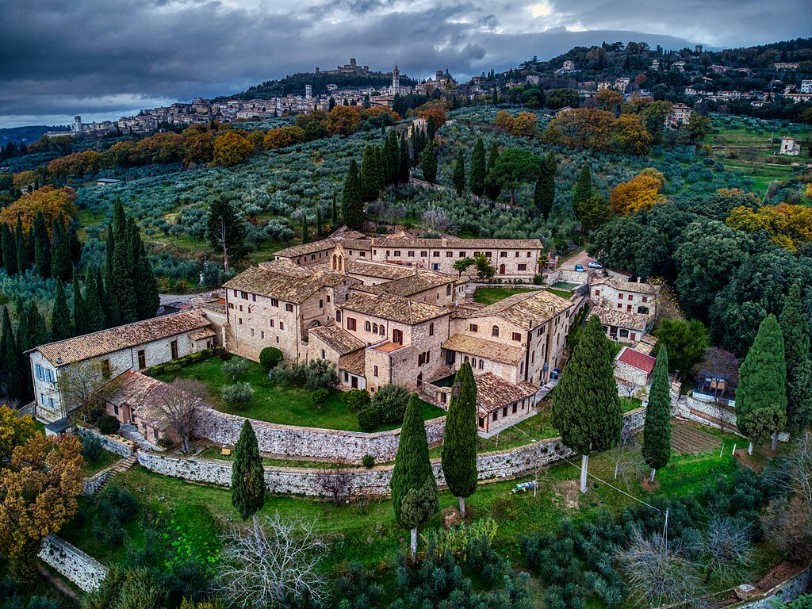
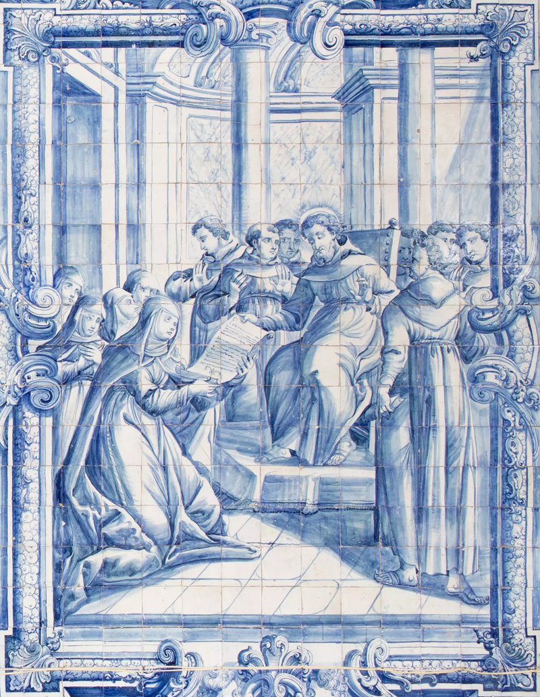
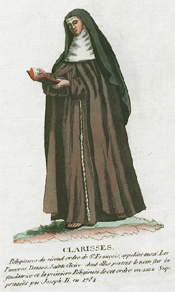
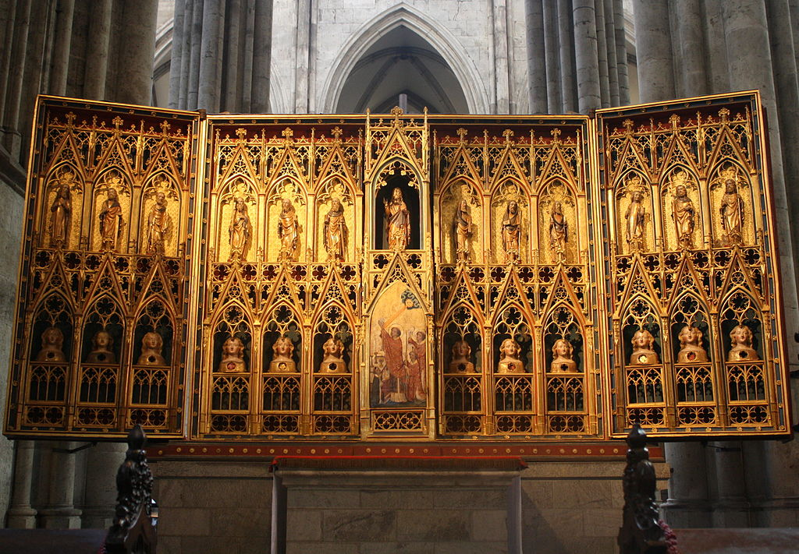

Las Hermanas Pobres, conocidas como Clarisas, fueron fundadas por Santa Clara en 1212 con el aliento de San Francisco. La primera comunidad se estableció en San Damián, a las afueras de Asís, donde Clara vivió y murió.
El primer texto normativo fue una fórmula de vida escrita por Francisco. Pero años después, Clara redactó su propia Regla, basada en la vida evangélica y la pobreza total, que fue aprobada por el papa Inocencio IV en 1253.
El hábito franciscano se caracteriza por su sencillez: túnica marrón, cinturón de cuerda, velo y sandalias. Este símbolo de humildad une a las hermanas en fraternidad y obediencia.
A lo largo de los siglos, muchas Hermanas Pobres han sido canonizadas: Santa Coleta, Santa Inés de Praga, Santa Catalina de Bolonia... Sus vidas son reflejo de la luz de Clara en la Iglesia.
